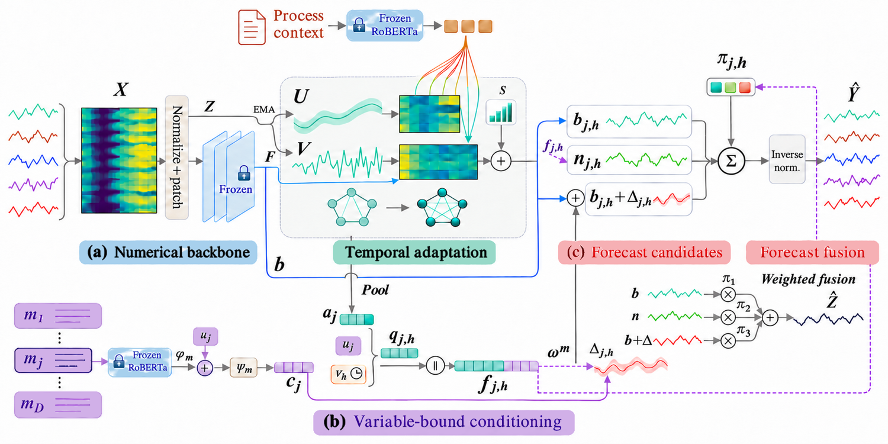

VarBridge · Research project
VarBridge: Bridging Process Dynamics and Variable-Specific Mechanistic Semantics for Bioprocess Forecasting
Bind each process variable to its mechanistic description and combine this semantics with historical state, variable identity, and forecast step through hierarchical expert fusion.

Research focus
Resources
The repository contains the available paper and implementation resources for this work. See its README for code entry points, dependencies, and data requirements.